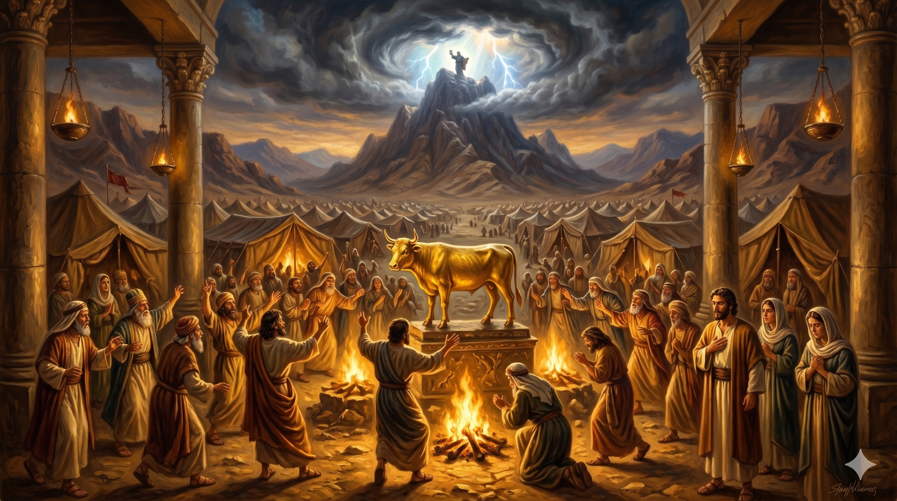

공회 앞에 선 스데반, 손을 들어 역사를 설명하며 담대하게 증언하는 모습 — 인간의 배반과 하나님의 신실함이 교차하는 이스라엘 역사의 핵심을 꿰뚫다
"이 모세를 하나님이 그 손으로 이집트에서 행한 이적과 기사로 구원자와 재판관을 삼아 내보내셨느니라 그가 사십 년 동안 광야에 있으면서 시내 산 수풀 불꽃 가운데서 천사에게 나타나더니 우리 조상들이 그를 거부하여 밀쳐 버리고 마음으로 이집트로 돌아가려 하여 아론에게 이르되 우리를 인도할 신들을 우리를 위하여 만들라" — 사도행전 7:35-39
스데반의 설교는 아브라함과 요셉에 이어 모세로 이어집니다. 그는 모세의 생애를 세 단계로 나누어 설명합니다. 이집트 왕궁에서 배운 40년, 미디안 광야에서 보낸 40년, 그리고 이스라엘을 이끈 40년입니다. 스데반이 모세를 이야기하는 방식은 독특합니다. 하나님이 보내신 구원자를 이스라엘이 거부했다는 것을 반복해서 강조합니다. "이 모세를 그들이 거부하였다." 이 말은 단순한 역사 서술이 아닙니다. 공회 앞에 선 스데반은, 지금 예수님을 거부한 그들에게 당신들의 조상도 똑같은 일을 했다고 말하고 있는 것입니다.
광야의 이스라엘은 놀라운 기적들을 경험했습니다. 홍해가 갈라지고, 만나가 내리고, 반석에서 물이 솟았습니다. 그럼에도 그들은 모세가 시내산에 오래 있는 동안 금송아지를 만들고 우상에게 절했습니다. 스데반은 이 불순종의 패턴을 꼭 집어 말합니다. 하나님을 경험하면서도 하나님을 떠나는 것, 하나님이 보내신 사람을 거부하는 것 — 이것이 이스라엘 역사 안에 반복된 죄의 패턴이며, 지금 이 공회도 그 패턴 안에 있다는 것입니다. 스데반의 설교는 고소가 아니었습니다. 하나님의 마음을 전하는 마지막 경고였습니다.

광야에서 금송아지 앞에 절하는 이스라엘 백성 — 기적을 경험했으면서도 하나님을 잊는 인간의 연약함, 그러나 그 자리에서도 포기하지 않으시는 하나님의 신실함
이스라엘의 광야 역사는 우리 자신의 이야기이기도 합니다. 우리도 하나님의 은혜를 경험하면서도, 상황이 조금 어려워지면 "다른 것"을 찾습니다. 하나님보다 더 쉽고 빠른 해결책을, 눈에 보이는 것을 원합니다. 스데반이 꿰뚫어 본 이 패턴은 수천 년을 거쳐 우리 안에서도 반복됩니다. 중요한 것은 이 패턴을 인식하는 것입니다. 내가 지금 어떤 "금송아지"를 만들고 있는지 — 어떤 것에 하나님의 자리를 내어 주고 있는지 — 스스로에게 물어보아야 합니다.
그러나 스데반의 설교에는 심판만 있지 않습니다. 하나님의 변함없는 신실함이 함께 흐릅니다. 이스라엘이 배반해도 하나님은 떠나지 않으셨습니다. 모세를 통해, 광야에서, 율법을 통해 계속해서 자기 백성을 이끄셨습니다. 우리가 하나님을 잊는 순간에도, 하나님은 우리를 잊지 않으십니다. 이 신실함이 우리로 하여금 패턴을 깨고 다시 하나님께 돌아오게 합니다.
이스라엘은 기적을 보고도 금송아지를 만들었습니다.
우리 안에서도 같은 패턴이 반복됩니다.
오늘, 내가 하나님 대신 붙들고 있는 것이 무엇인지 솔직하게 보십시오.